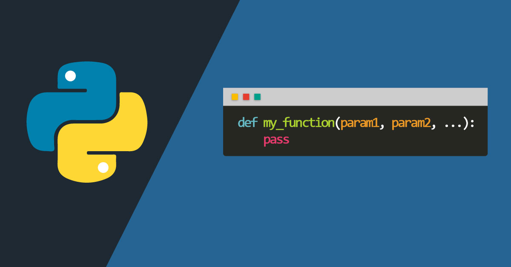
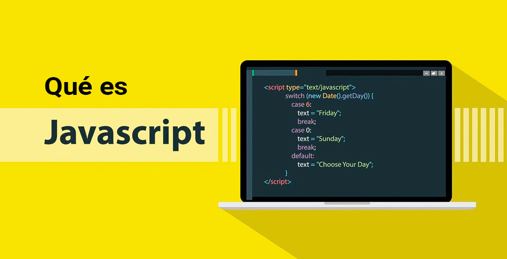

Los diferentes lenguajes que existen
Actualmente existen muchos tipos de lenguaje de programación que se utilizan dependiendo de los objetivos del software que se quiere desarrollar.
Por ejemplo, actualmente la programación web está teniendo gran alse. Por ello, los lenguajes de programación que llamamos del lado del cliente
(PHP y Python, por ejemplo) y del lado del servidor (Javascript) son de los más utilizados.
Los lenguajes de programación más utilizados por los desarrolladores de software en la actualidad son los siguientes:

PHP
PHP es un lenguaje de programación de código abierto, enfocado para el desarrollo web. Entre las muchas cosas que pueden realizarse con PHP, destacan
la creación de web dinámicas al poderse incrustar su código dentro de HTML y su uso como scripts del lado del servidor.


Java
Java es un lenguaje de programación y una plataforma informática comercializada por primera vez en 1995 por Sun Microsystems. Hay muchas aplicaciones y sitios web
que no funcionarán a menos que tenga Java instalado y cada día se crean más. Java es rápido, seguro y fiable. Desde portátiles hasta centros de datos, desde consolas
para juegos hasta súper computadoras, desde teléfonos móviles hasta Internet, Java está en todas partes.
Java es un lenguaje de programación orientado a objetos que destaca por ser multiplataforma. El código de Java tiene la gran ventaja de que puede
ser ejecutado en cualquier dispositivo. Java es uno de los lenguajes más utilizados actualmente gracias al uso que se hace de distintas plataformas
(smartphones, ordenadores y tablets, principalmente).
Ejemplo:

Python
Python es un lenguaje de programación interpretado de tipado dinámico cuya filosofía hace hincapié en una sintaxis que favorezca un código legible. Se trata de un lenguaje de programación multiparadigma y disponible en varias plataformas.
Dicho de otro modo, Python es:
- Se ejecuta sin necesidad de ser procesado por el compilador y se detectan los errores en tiempo de ejecución.
- Soporta programación funcional, programación imperativa y programación orientada a objetos.
- Dinámico: Las variables se comprueban en tiempo de ejecución.
- Disponible para plataformas de Windows, Linux o MAC.
- No dispone de licencia para programar.
Ejemplo:

C++
C++ es un lenguaje de programación diseñado a mediados de los años 1980 por Bjarne Stroustrup. La intención de su creación fue el extender al lenguaje de
programación C mecanismos que permiten la manipulación de objetos. En ese sentido, desde el punto de vista de los lenguajes orientados a objetos, el C++
es un lenguaje híbrido.
Ejemplo:

Javascript
JavaScript (JS) es un lenguaje de programación ligero, interpretado, o compilado justo-a-tiempo con funciones de primera clase. Si bien es más conocido como un
lenguaje de scripting (secuencias de comandos) para páginas web, y es usado en muchos entornos fuera del navegador, tal como Node.js, Apache CouchDB y Adobe Acrobat.
JavaScript es un lenguaje de programación basada en prototipos, multiparadigma, de un solo hilo, dinámico, con soporte para programación orientada a objetos, imperativa
y declarativa (por ejemplo programación funcional).
Por ejemplo:
Leer por teclado dos valores los cuales corresponden al lanzamiento de dos dados. Dependiendo de los valores imprimir:
- Si los dos valores son iguales imprimir “Par”.
- Los dos valores son desiguales imprimir “Lanzamiento”.
- La suma de los valores es menor a 6 imprimir “Juego Perdido”.
- Si algún valor es 1 o 2 imprimir “Puntaje Deficiente”.
- Algún valor es 5 o 6 imprimir “Puntaje Alto”
Ejemplo:

C#
C#, es una evolución que Microsoft realizó de este lenguaje, tomando lo mejor de los lenguajes C y C++, y ha continuado añadiéndole funcionalidades, tomando de otros lenguajes,
como java, algo de su sintaxis evolucionada. Lo orientó a objetos para toda su plataforma NET (tanto Framework como Core), y con el tiempo adaptó las facilidades de la creación de
código que tenía otro de sus lenguajes más populares, Visual Basic, haciéndolo tan polivalente y fácil de aprender como éste, sin perder ni un ápice de la potencia original de C.
En la versión de .NET Core, se ha reconstruido por completo su compilador, haciendo las aplicaciones un 600% más rápidas.
Ejemplo:
Swift
El lenguaje de programación Swift es el utilizado actualmente para los desarrollos digitales de apps para entornos iOS y macOS. Es decir, que es el lenguaje ideal a la hora de
programar una app que deba ser compatible con los dispositivos de la marca Apple.
Este lenguaje de programación Swift fue presentado oficialmente en el año 2014, durante la Conferencia Anual de Desarrolladores que ofrece la misma compañía Apple.